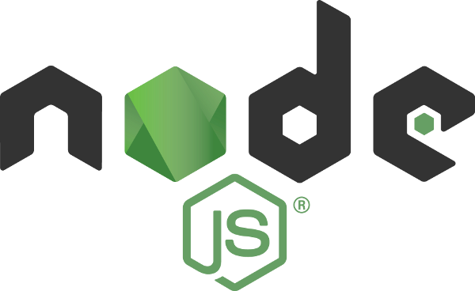
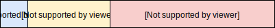
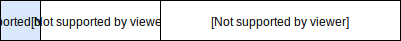
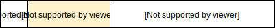

Presentación de la asignatura

Contenidos
- Introducción a las tecnologías web. Protocolo HTTP
- Estuctura y estilo: HTML y CSS
- Programación en Javascript
- Javascript en el servidor: Node
- Frameworks en el lado del servidor: Express.js
- Aspectos avanzados de programación en el servidor
- Javascript en el cliente: jQuery
- Servicios web, AJAX y Rich Internet Applications.
- Accesibilidad web.
Una visión global de la asignatura

Las tecnologías web utilizan una arquitectura de cliente/servidor.
El servidor es un programa que responde peticiones
El cliente realiza esas peticiones a través de un navegador.

Ambos componentes se comunican mediante un protocolo
→ Tema 1: El protocolo HTTP
La información devuelta por el servidor (páginas HTML, hojas de estilo CSS, imágenes, etc.) es la que permite al navegador visualizar la página web.
→ Tema 2: HTML y CSS
→ Tema 9: Accesibilidad en la web
Nuestros objetivos
- Desarrollar programas que se ejecuten en el lado del servidor.
- Desarrollar programas que se ejecuten en el lado del cliente (navegador).
¿Qué lenguajes de programación utilizamos?
Utilizaremos Javascript, tanto en el lado del servidor como en el lado del cliente.
→ Tema 3: Javascript
¿Javascript en el servidor?
Para ejecutar programas Javascript fuera de un navegador necesitamos un intérprete:


Existen distintas implementaciones de un servidor web:
- Apache, escrito en C.
- Tomcat, escrito en Java.
Implementaremos nuestro propio servidor en Javascript
(utilizando una librería: http)
→ Tema 4: Node.js
A medida que nuestro servidor web adquiera complejidad, necesitaremos mecanismos para organizar su estructura.
Para ello existen los frameworks web.
→ Temas 5 y 6: Express.js
Hemos visto que el servidor proporciona al navegador los recursos necesarios para visualizar la página: HTML, CSS, imágenes, etc.
Pero el servidor también puede proporcionar al cliente código en Javascript:

Este código será ejecutado por el navegador en el ordenador del usuario de la página.
Nos permitirá modificar los elementos de la página dinámicamente.
→ Tema 7: Javascript en el cliente y jQuery

El código Javascript que se ejecute en el cliente también puede realizar peticiones al servidor.
El servidor responderá con la información pedida.
Modelo SPA (Single Page Application)
→ Tema 8: AJAX y Servicios Web
Requisitos
- Tecnología de la programación
- Programación orientada a objetos.
- Arquitectura MVC.
- Bases de datos
- Manejo de un SGBD: MySQL.
- Consultas SQL básicas.
Evaluación
- 10% - Práctica incremental guiada (opcional)
- 30% - Prácticas no guiadas (obligatorias)
- 60% - Examen final en laboratorio
Para aprobar es necesario:
- Calificación de APTO en cada práctica.
- Calificación de 4 sobre 10 en el examen.
- Calificación final ponderada mayor o igual que 5.
Práctica guiada
Se realiza por parejas, en sucesivas entregas (cortas)
Cada entrega se evalúa como APTO/NO APTO
Puntuación total de la práctica guiada:
Prácticas no guiadas
Se realizan por parejas.
- Aplicación web modelo clásico (65%)
- Aplicación web modelo SPA (35%)
Sesiones de laboratorio:
- Viernes de 16 a 18h.
- A partir del 6 de octubre.
- Laboratorios 5 y 6.
Calificación de prácticas no guiadas
- NO APTO no recuperable
Práctica copiada o no entregada.
Las copias se informarán al CAC (decanato) - NO APTO recuperable
Errores graves de diseño, o funcionamiento incorrecto. Puede volver a entregarse. - APTO con calificación numérica
La calificación numérica se otorga en función de las extensiones entregadas.
Atención al estudiante
-
Campus Virtual
- Material y entrega de prácticas.
- ¡No para mensajes al profesor!
-
GitHub
- https://github.com/manuelmontenegro/AW-2017-18
- Código de los ejemplos y ejercicios.
- Diapositivas actualizadas en formato HTML.
-
Tutorías
- Martes: 10-13h y 14-16h.
Miércoles: 17-18h
Despacho 219 (2ª planta) - Otro horario: PPH.
- Martes: 10-13h y 14-16h.
-
Además de las tutorías...
- Leer FAQ de prácticas en el Campus Virtual.
- Correo:
montenegro@fdi.ucm.es - ¡No mensajes a través del CV!
Software
Navegador actualizado: Firefox o Chrome
Sistema gestor de bases de datos:
XAMPP = MariaDB + phpMyAdmin
MariaDB tiene la misma interfaz que MySQL
Tecnología del lado del servidor
Node.js (nodejs.org)
Entornos de desarrollo

Visual studio code (code.visualstudio.com)
Netbeans IDE (netbeans.org)
o bien: Atom, vim, Sublime Text, Notepad++, etc.
Bibliografía
Se concretará al final de cada tema.
- E. Freeman, E. Freeman
Head first HTML : with CSS & XHTML
O'Reilly (2012) - E. Brown
Learning Javascript (3rd edition)
O'Reilly (2016) -
B. A. Syed
Beginning Node.js
Apress (2014)